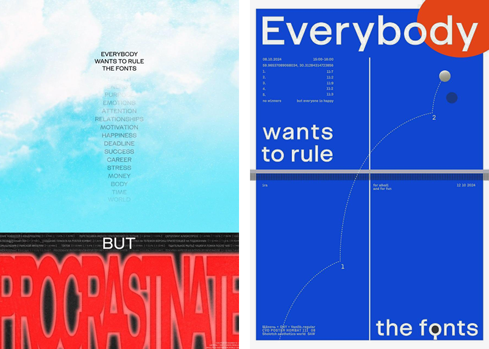

Учебник • Основы личного бренда • Продвижение личного бренда
Основы личного бренда
1.3 Продвижение личного бренда


3 минуты на изучение
Основные способы продвижения личного бренда: социальные сети, партнёрский маркетинг, платная реклама, офлайн-продвижение
Способы продвижения
Онлайн- и офлайн-подходы
Продвижение личного бренда — это ключевой шаг к тому, чтобы стать узнаваемым и востребованным профессионалом. Социальные сети, коллаборации, реклама и офлайн-активности помогут выстроить контакт с вашей аудиторией и усилить её интерес к вашему делу.
Социальные сети
Социальные сети — самый популярный способ продвижения. Они позволяют вам напрямую общаться с подписчиками и публиковать регулярный контент. Важно использовать различные форматы — фото, видео и текстовые посты, чтобы со всех сторон раскрыть ваш бренд и создать образ живого, активного человека.
Однако управление социальными сетями требует больших усилий и времени, поэтому со временем эту задачу можно доверить SMM-специалисту. Главное — сохранить единый голос бренда, который будет узнаваем и близок вашей аудитории.
Self
Продвижение в соцсетях
Платная реклама
Платные каналы продвижения, такие как таргетированная или контекстная реклама, помогут увеличить охват. Чаще всего используется реклама в Telegram, VK и Яндекс Директе. Настройте рекламу с фокусом на вашу целевую аудиторию, чтобы ваш бренд увидели именно те, кому может быть интересно ваше творчество.

Партнёрский маркетинг
Коллаборации с другими профессионалами и брендамии— отличный способ расширить аудиторию. Найдите партнёров, с которыми у вас совпадают ценности, чтобы вместе продвигаться через гостевые посты, общие проекты или интервью.
Офлайн-продвижение
Выступления на мероприятиях, участие в выставках и размещение печатных материалов — всё это делает бренд более ощутимым и надёжным. Используйте офлайн-форматы для установления личных связей и демонстрации своих работ в физическом пространстве.
Задание
Подумайте, какой способ продвижения личного бренда из вышеперечисленных подходит вам больше всего. Подберите 1-2 примера использования этого подхода в вашей творческой среде.
Основы личного бренда — это фундамент для создания уникального образа, который выделяет вас среди других и помогает достичь профессиональных целей. Важно не забывать, что личный бренд требует постоянного развития и саморефлексии.